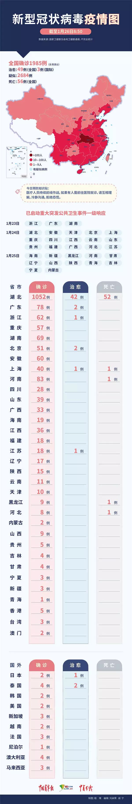

到边界拿货，货车司机组队……医疗物资如何打通武汉城
原文链接 备份链接 *************▲************* 大批量新国标标准的口罩正进入嘉兴“心脏仓” 。 （新华社/阿里巴巴供图/图） 全文共*4420*字，阅读大约需要*10*分钟。 “缺口以万为单位”，武汉市汉口医 …

作者秦珍子
编辑 张国
农历庚子年初一早上8点多，湖北村医张茹芳（应受访人要求化名）出门上班。她的防护装备是：一件雨衣、一双雨靴、一副平光眼镜。她在雨靴外又套了一双鞋套。晚辈笑她，“非主流混搭”。
丈夫建议她工作时戴上摩托车头盔，她试着戴了一下，感觉重，放弃了。
这是湖北省荆州市江陵县的一个村子，距离武汉市200多公里。张茹芳所在的村医务室一共有两名医生，日常服务的村民则有两三千人。她在这里平静工作了几十年，直到新型冠状病毒感染的肺炎疫情爆发以来，她成为农村医疗体系应对疫情的末端环节。
从早上7点开始，村里的公共喇叭就不断以“命令式口吻”播音：禁止串门，禁止聚餐。村委会的灯又亮了一夜，24小时有人值班。
几天以来，到医务室看病的村民较往常减少，但来的人症状都比较类似，主要是发烧、咳嗽以及其他“看起来像感冒”的情况——考虑到防疫形势，没有此类症状的村民尽量避免去医务室。
大部分时间，张茹芳都在给看病的村民们普及新型肺炎病毒知识，“一种来源不明的病毒，初期症状和感冒差不多，但也可能不发烧”。有发热情况的，她赶紧让患者去镇卫生院或者县医院就诊，可以初步判断为普通感冒的，就给一些药品让在家观察，“防止在医院交叉感染”。
据她观察，村民的防护意识近几日明显提高。春节前“返乡潮”到来时，随着年轻人归来，麻将馆也火爆起来，需要抢位置或提前预定。如今，很少有人再去打麻将了，串门拜年的人也少了很多。来医务室的村民几乎都戴了口罩，甚至还有戴“N95”的。镇上的药店口罩“限购”，每天“可凭身份证登记购买”。
腊月二十九夜里，村干部们挨家挨户敲门，按照镇里传达的要求，发放“预防肺炎”的传单。每天，镇干部会挨村“巡逻”，去村委会、各村医务室查看，甚至会在路口劝退过年走亲访友的人。村干部会排查“返乡人员”和有红白喜事计划的家庭。有的村子每天“监控返乡村民体温”，将记录上报。所有村庄按照镇上的应急通知，“红事一律取消，白事尽量从简”。荆州市级疫情防控指挥部要求，“酒店、宾馆无条件接受宴席、房间的退订退费”。
张茹芳所在的医务室平均每天接触患者及家属超过100人。全镇有10多个农村医务室，包括她在内，村医们向镇里提出需要防护服。“我一旦被感染，会感染很多人”，她解释。
最终，他们每人分到一套从县里协调来的防护服。防护服“很薄”，套在冬衣外容易破，且不能反复使用，“还不到万不得已的时候”不舍得穿。张茹芳如今就用雨衣雨靴代替防护服。谨慎起见，她上班时同时戴3个口罩，每隔几小时需要更换口罩时，她会取下紧贴面部的那一个，再在最外面戴上一个新的。靠着镇上分配的10个口罩，加医务室原来的一点储备，她和同事撑了3天，终于等到新供给。大年初二早上，她接到了镇上的通知，医疗物资已经到位，可以去镇卫生院领取。
此前，医疗物资紧缺是一个明显问题。张茹芳在外地工作的侄女对记者表示，除夕夜她的同乡们一直在通过社交网络呼吁，转发荆州市中心医院、荆州市第一人民医院、荆州市第二人民医院发布的“接受捐赠”公告。张的女儿曾向荆州市人民医院医生朋友求助，希望给母亲找来一套防护装备，却被告知“我连口罩都要去外面买，哪来的防护服”。有人在群里发了“用文件袋制作护目镜”的视频，张茹芳的丈夫看到了，去给妻子找来了雨衣和摩托车头盔。
对于“新型肺炎”，村民们的态度时而重视，时而轻视。美国“撤侨”的消息传来，引起一轮紧张；每天通报的“治愈患者”数量增加，紧张就又会缓解。武汉要建“小汤山”，大家的反应是：“医院装不下了吗？”一打听，四里八乡没有“确诊”的人，又觉得没事了。
张茹芳年轻时被派到城市“学医”，村老支书对她说：“我们要培养一个’永久牌’，不是’飞鸽牌’，一定要回到村里。”新型肺炎疫情出现后，家人劝她别去上班了，她犹豫过，还是去了，“都是乡亲，太熟悉了，不可能不去”。她坦言，一个人在家时也觉得很害怕，哭过好几次：“敌人是谁？敌人在哪？都不知道啊。手里也没有武器，搞不好还会连累全家人。”
但当穿上白大褂，她又觉得压力小一些，“这是我的职责”。
每天下班回到家，张茹芳会用84消毒液擦洗雨衣，用酒精擦拭钥匙、锁、门把手和她触摸过的家具。为了保护家人，她坚持在家里也戴着两层口罩，和家人分房而睡。全家人吃饭时用公筷分菜，并且尽量用一次性餐具。她会端着饭菜到远离丈夫和女儿的地方吃。
镇里进入了紧张的防疫状态。镇政府连轴转，没人过年休假。县城也是如此，初一晚上，有人在凌晨接到了镇领导发布的通知，告知各村要调用辖区内货车封闭路口，派专人把守，除应急救援车辆一律限行；各村连夜安排，“落实封闭自保行为，不谈条件，不谈报酬，战时状态，十万火急”。
此前，江陵县的防控指挥部已经连续发布1、2、3号通告，宣布实施包括公共交通线路停运、外地返乡人员健康登记、营业场所关闭、交通要道设置疫情检测点等措施。
初一早上，张茹芳出门前，门口就有村民来访，希望进屋看病，她没同意。但病人进家这种情况难以避免：她晚上一回家，又有老人为咳嗽的妻子而来，找她开药，打量她一番问道：“还戴着口罩？你怎么这么怕死！”
她早就想好了，接下来还要去镇上采购些一次性雨衣，“明天脑袋上一定要套个塑料袋”。
（本文由中国青年报独立出品，首发在中国青年报客户端及头条号，加入树木计划。）
原文链接 备份链接 *************▲************* 大批量新国标标准的口罩正进入嘉兴“心脏仓” 。 （新华社/阿里巴巴供图/图） 全文共*4420*字，阅读大约需要*10*分钟。 “缺口以万为单位”，武汉市汉口医 …
原文链接 备份链接 这是一个不同寻常的年，心有余悸，跌宕起伏。回武汉这几天的经历，像一部历险记，在我脑海里刻下了深深的烙印。 淡定的武汉 我是1月20号从深圳回老家武汉的。我曾从事过新闻工作，也有不少武汉医疗圈的朋友，因此对武汉肺炎的事一 …
原文链接 备份链接 武汉第一批七家定点医院医用物资也存在短缺 防疫物资今日抵达汉口，明日有望缓解 本文首发于南方人物周刊 文 | 本刊记者 徐梅 赵蕾 张宇欣 编辑 | 周建平 蒯乐昊 全文约3479字，细读大约需要9分钟 有的市属一 …
原文链接 备份链接 今天，湖北省武汉市红十字会向武汉市中心医院提供了医用外科口罩4000个、医用防护服600套；向武汉市洪山区中医医院提供了医用防护服400套，84消毒液10箱，医用口罩5箱。武汉红十字会表示，接收的所有物资都将被送往一线 …
原文链接 备份链接 按规定，他们每接一次病人，都要全车消毒、销毁防护服，不然可能会成为新的传染源。但现实情况是，他们全站连一套防护服都没了。除夕夜里两点，他没有睡觉，发了这半年里唯一一条不是关于女儿的朋友圈，是一条物资的求助。他告诉《人 …